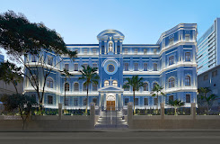

Sobre mim
Bem-vindo à minha página "Sobre Mim", onde compartilho minha jornada pessoal, interesses e objetivos. Sou um indivíduo apaixonado por explorar a vida, buscando novas experiências e oportunidades de crescimento. Descubra mais sobre mim enquanto navegamos juntos pelas alegrias e desafios que compõem minha jornada.

Biografia
Meu nome é Felipe Birchal Borges, nasci no dia 16 de Maio de 2006 e, portanto, atualmente possuo 17 anos de idade. Minha vida sempre se resumiu a um garoto repleto de alegria, energia, curiosidade, inteligente e muito dedicado. Desde os meus primeiros anos de idade, sempre tive interesse pelo novo, sempre tentando descobrir o máximo de coisas possíveis em um dia. Minha primeira escola foi o La Fontaine, um lugar que nunca imaginei que construiria tamanha história dentro de meu coração. Lá fiz amizades que levei para a vida inteira, inclusive, foi lá que meu coração foi roubado por uma linda menininha, delicada como uma pena, e linda como as estrelas numa noite de céu aberto.Retornando a minha história, após sair do La Fontaine, fui para um colégio que, futuramente, poderia chamar de lar, o Colégio Sagrado Coração de Jesus. Lá vivi 12 longos e felizes anos, que me trouxeram grandes amizades, momentos cativantes, de alegria e tristeza, lágrimas de felicidade… e dor. Agora, aos meus 17 anos, sigo em busca de meus sonhos e… lembra daquela menina que mencionei no início ?! Pois é, agora ela é a mulher da minha vida, minha mão companheira, minha melhor amiga, meu maior amor. Estamos quase fazeno dois anos juntos. Dois anos que, para mim, foram os melhores da minha vida. Ambicioso como sou, sei que sempre irei em busca de melhorar a cada dia, e conquistar uma vida feliz e sem preocupações para mim, meus pais, minha princesa, e nossos futuros filhos. Digo, com orgulho, que isso será só o começo.
